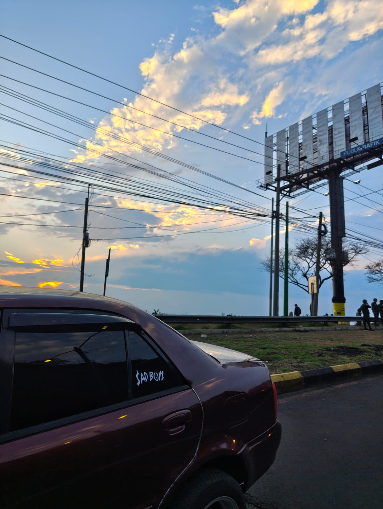

Yo soy una persona que escucha de todo, cosas que deje de escuchar un buen rato como lo es la musica electronica, cosas que no escucho tanto como lo es la salsa, pero disfruto y me gusta realizar mis actividades con musica, como realizar mis tareas, cuando quiero despejarme de todo y caminar , siempre escuchando musica, y sobre todo en el trafico, manejando cuando salgo a rutas extensas, como cuando viajo a mi casa que son aproximadamente 4-5 horas para llegar a Coban, como cualquier persona cuento con artistas que escuho demasiado, como lo son Alvaro Diaz, Nsqk, algunas bandas como los son Mana, Los enanitos verdes, artistas actuales como lo son Peso Pluma, Bad Bunny, artistas con temazos de antes como, Jose Jose y Luis Miguel de los que mas escucho, algunos que cantan en ingles como lo son Marc DeMarco, Kendrick Lamar y muchos más, pero hay uno que estara siempre alentandome a ser mejor, y muchas otras veces para ponerme triste....
Este es Junior H..
un artista mexicano el cual el modelo de canciones es mas basado en el regional, si bien al decir esto se que se pensaran en los famosos corridos, en parte si pero su musica es mas representativa para gente que acostumbra a estar mas triste, para recordar a esa persona que uno queria tanto y que por cosas del destino pues ya no pudo seguir a mas, muchas de sus canciones que me gustan son de años post pandemia, el cual se hizo mas conocido, aqui dejare algunas canciones que 100% recomiendo, sus letras no son tan groseras como los de los otros artistas..
Aqui le dejo el link de unos de sus mejores albums de el, espero pueda considerar su musica
Uno de los mejores Albums de Junior HEstas son una de muchas canciones que me gustan de el, considero que son canciones tristes, mas sin embargo que el sea mi artista favorito no quiere decir que yo sea una persona muy triste o que extrañe a alguien, personalmente soy una persona que le gusta estar feliz, pero creo que es algo que me representa mucho
Aunque de hecho en mi carro yo cuento con stickers del logo de el, siento que sus canciones tienen mucho que ver con uno.
